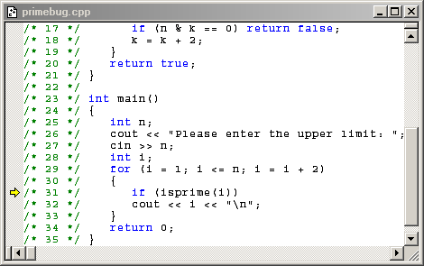
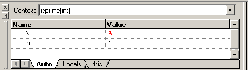
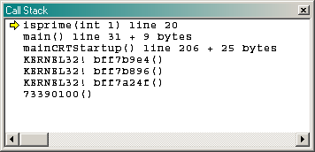
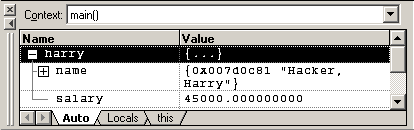
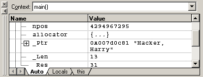

program < test1.in > test1.out
double squareroot(double a)
{ if (a == 0) return 0;
double xnew = a;
double xold;
do
{ xold = xnew;
xnew = (xold + a / xold) / 2;
}
while (not approx_equal(xnew, xold));
return xnew;
}
void raise_salary(Employee& e, double by)
{ assert(e.get_salary() >= 0 );
assert(by >= -100);
double new_salary = e.get_salary() * (1 + by / 100);
e.set_salary(new_salary);
}
assertion failed in file finclac.cpp line 61: by >= -100
string int_name(int n)
{ cout << "Entering digit_name. n = " << n << "\n";
...
cout << "Exiting digit name. Return value = "
<< s << "\n";
return s;
}
Inside int_name. Thousands.
Entering int_name. n = 12
Inside int_name. Teens.
Entering teen_name. n = 12
Exiting teen_name. Return value = twelve
Exiting digit_name. Return value = twelve
Inside int_name. Hundreds.
Entering digit_name. n = 3
Exiting digit_name. Return value = three
Inside int_name. Ones.
Entering digit_name. n = 5
Exiting digit_name. Return value = five
Exiting int_name. Return value = twelve thousand three hundred five


"step over" advances the program tor = future_value(balance, p n);
cout << setw(10) << r;
r = future_value(balance, p n);
cout << setw(10) << r;
"step into" advances the program tor = future_value(balance, p n);
cout << setw(10) << r;
double future_value(double initial_balance, double p, int n)
{ double b = initial_balance * pow((1 + p /100), n);
return b;
}


